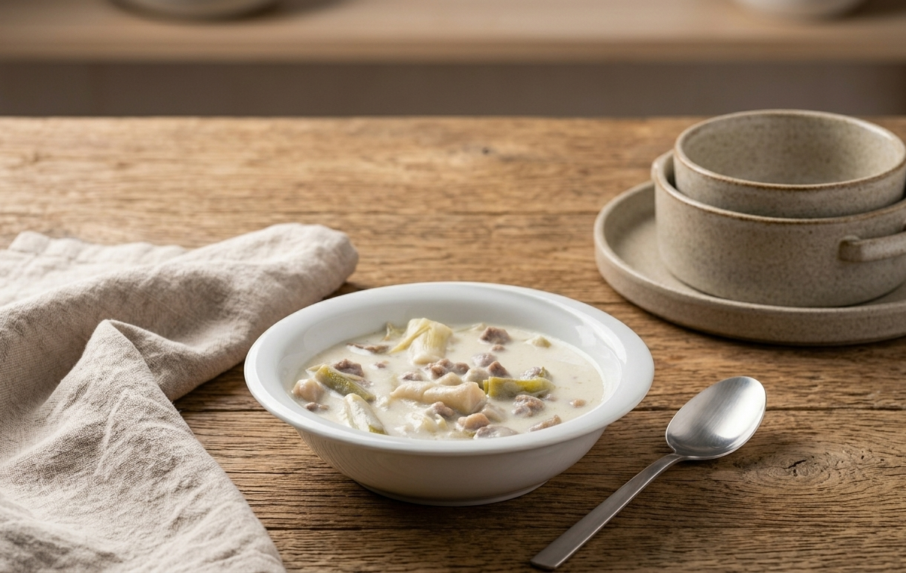

Gaziantep mutfağının en özel şifa kaynaklarından biri; kuzu eti, taze sarımsak ve süzme yoğurdun muazzam birlikteliği.

Malzemeler
Ana Bileşenler
500g Kuzu Kuşbaşı
1 Bağ Taze Sarımsak (Yaprakları dahil)
1 Su Bardağı Süzme Yoğurt
1 Çay Bardağı Haşlanmış Nohut (Arzuya göre)
Bağlayıcılar ve Yağlar
1 Çorba Kaşığı Tereyağı
1 Silme Kaşık Un
Sıcak Su
Tuz
Hazırlanış
1. Etin Mühürlenmesi: Kuzu kuşbaşıları suyunu çekip kavrulana kadar pişirin. Suyu çekilince tereyağını ekleyip bir miktar daha kavurarak aroma derinliği kazandırın.
2. Pişirme Süreci: Etlerin üzerini örtecek kadar sıcak su ekleyin. Etler yumuşayana dek, su azaldıkça sıcak su ilavesi yaparak pişirmeye devam edin. (Tuzun bir kısmını kavururken, kalanını bu aşamada ekleyin).
3. Sebze İlavesi: Taze sarımsakları (yaprakları dahil) yarım parmak uzunluğunda doğrayın ve pişmiş etlere ekleyin. Nohut kullanacaksanız, sarımsaklar pişmeye yakınken tencereye dahil edin.
4. Terbiye (Bağlama): Ayrı bir kapta süzme yoğurt ve silme bir kaşık unu karıştırın. Yemeğin sıcak suyundan ekleyerek yoğurdu yavaşça inceltin.
5. Final: Hazırladığınız terbiyeyi yavaşça ve karıştırarak yemeğe ilave edin. Yaklaşık 5 dakika daha pişirdikten sonra ocağı kapatın.
Notlar ve İpuçları
• Yoğurt Kesilmemesi İçin: Terbiyeyi yemeğe eklerken mutlaka yemeğin suyundan alarak ılıştırın (temperleme) ve yavaşça dökün.
• Taze Sarımsak Seçimi: Sarımsakların sadece beyaz kısımlarını değil, taze yeşil yapraklarını da kullanmak yemeğe karakteristik rengini ve aromasını verir.
• Kıvam Kontrolü: Yoğurt eklendikten sonra yemek fazla koyulaşırsa, çok az sıcak su ile kıvamı açabilirsiniz.
Kalori Tablosu (Porsiyon Başına)
Bileşen
Miktar / Detay
Kalori (kcal)
Kuzu Kuşbaşı
250g
~620
Süzme Yoğurt & Un
1/2 Bardak + Un
~110
Tereyağı
1/2 Çorba Kaşığı
~60
Taze Sarımsak & Nohut
Karma
~85
TOPLAM
1 Porsiyon
~875 kcal
Gastronomik Değerlendirme
Aroma Profili: Kuzu etinin yoğun tadı, taze sarımsağın aromatik ve hafif tatlımsı yapısıyla dengelenir. Süzme yoğurdun kattığı hafif asidite, tabağa ferah bir dokunuş sağlar.
Sağlık Analizi: Tam bir bağışıklık dostu olan Şiveydiz; yüksek protein, probiyotik (pişmiş olsa da yoğurt bazlı olması) ve doğal antibiyotik (sarımsak) etkisiyle besleyiciliği en yüksek tencere yemeklerindendir.